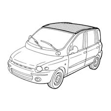
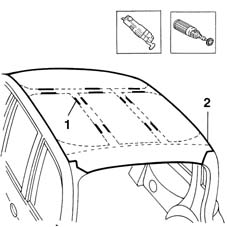
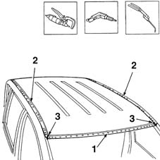
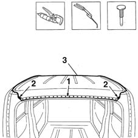
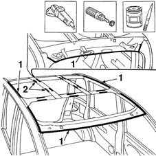
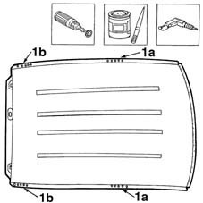
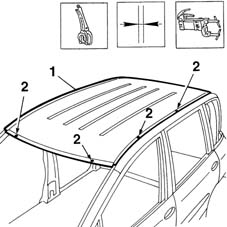
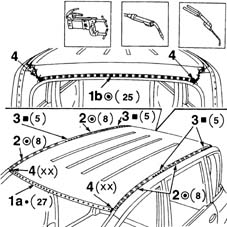
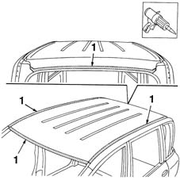

7210E28 R.R. ROOF PANEL
- Path
- Procedures > 72 PANELS AND FRAME > 7210 REMOVING REFITTING > 7210E EXTERNAL PARTS > 7210E28 R.R. ROOF PANEL
- Kind
- repair procedure (removal / refitting; the operation number is the code)
- Applies to
- all engines; all production periods
- Interactive page
- https://sloeber94.github.io/elrnDB-fMltpl/en/#/2892321
Applies to: all engines; all production periods
 Removing
Removing
 Refitting
RefittingMove all fouling parts.
Check if any of the connected parts are deformed by checking body alignment dimensions. Use appropriate measurement tools (reference rigs, templates or gauges).
Straighten the body if necessary.

Applies to: all engines; all production periods
1. Use a vibrating cutter with suitable blade to cut the sealant between the roof fins.
2. Remove the paint from around the entire external edge of the roof using a rotary brush to expose the spot welds.

Applies to: all engines; all production periods
1. Use the chamfering machine and remove the spot welds on the front edge.
2. Drill out weld points on the side edges.
3. Use an oxyacetylene torch and steel brush to unweld the braze welds at the corners of the roof.

Applies to: all engines; all production periods
1. Use the chamfering machine and remove the spot welds at the rear of the roof.
2. Use an oxyacetylene torch and wire brush to remove the brazing at the rear corners of the roof.
Use a chisel and mallet to remove spots ground previously.
3. Remove the roof panel from the car.

Applies to: all engines; all production periods
Refitting
RemovingStraighten the roof panel seat flaps using a mallet and profiled stake.
Use a grinding wheel to remove the spot weld residues.
Use a rotary brush to clean treated areas.
1. Apply the electroweldable paint finish to the areas shown in the figure.
2. Renew the expanded foam treatment.

Applies to: all engines; all production periods
Use a rotary brush to remove the corrosion-proofing from around the inner and outer edge of the part.
Apply the electroweldable paint finish to the affected parts.
1. Use the drill and make holes near the areas in contact with the central (1a) and rear (1b) fins.

Applies to: all engines; all production periods
1. Position the part correctly using self-locking grippers.
Check the alignment with the door frames.
Use a sliding gauge to check the diagonals of the windscreen frame and tailgate frame.
2. Make some spot welds on both sides of the roof.
Remove the front and rear doors.

Applies to: all engines; all production periods
1. Use a spot welder to weld the roof panel in the area of the windscreen frame (1a) and tailgate frame (1b).
2. Use a spot welder to weld the roof in the area of the right and left side panels.
3. Use a MIG welder to fill weld near the fins.
4. Use an oxyacetylene torch to hard-solder the roof panel corners.

Applies to: all engines; all production periods
Correct any deformations in the panel using a profiled stake and mallet.
Use a grinding wheel to dress the brazing.
Use a rotary brush to clean the newly-welded areas.
Apply rust-proofing to newly-welded areas.
1. Apply sealant in the area of contact between roof panel and car border.
Apply paint.
Apply wax.

Applies to: all engines; all production periods
Refit all fouling parts.